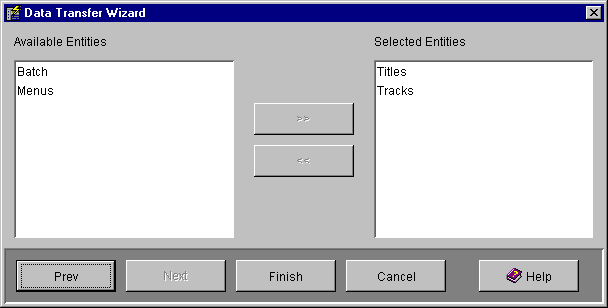

The Data Transfers screen is used to configure a transfer of data from a mirrored Data Store (one that has the Mirrored data Store? box checked). The data is transferred to mirror tables in a Mirror Data Store.
Performing a data transfer updates the mirror with the current data from your source database. This operation can be performed automatically by scheduling a data transfer for automatic execution.
Note that the destination tables in the mirror database are emptied as the first stage of the transfer, so after a transfer the mirror will contain exactly the same data as the source data store.

The tree in the data transfers screen displays all the data transfers that have
been defined. Expanding a data transfer in the tree will show all the entities
(tables) that the transfer will cause to be transferred from the data store
to the mirror.
The Transfer Wizard button displays the Transfer Wizard which guides you through the steps required to create a Data Transfer. The wizard may be used to create a new Data Transfer or modify an existing one.
The Schedule button displays a Schedule Properties screen that you can use to schedule the currently selected data transfer for automatic execution.
If a Data Transfer is selected pressing the Remove button will completely remove that data transfer. If an entity (table) within a data transfer is selected then pressing the Remove button will remove just that entity from its parent data transfer.
If a Data Transfer is selected pressing the Properties button will display the Transfer Wizard for that data transfer.
If a Data Transfer is selected pressing the Execute button will execute the data transfer. The tables specified by the data transfer will be copied from the data store (source database) to the mirror. A Data Transfer Progress screen will be displayed showing how many records have been copied. The progress screen will close automatically when the transfer is complete.
The Data Transfer Wizard guides you through the steps required to create a Data Transfer. The wizard may be used to create a new Data Transfer or modify an existing one.
The Data Transfer wizard has the following wizard panels:
Select Create or Update
Data Transfer Properties
Data Transfer Entities

The Select Create or Update wizard panel displays information on how to use the Data Transfer Wizard and allows you to select whether to create a new Data Transfer or modify the currently selected Data Transfer.

The Data Transfer Properties wizard panel specifies the name of the transfer and which Data Store is to be transferred.
Name is the name of the transfer, choose a name that describes what is to be transferred.
Description is any additional text to describe the transfer.
The Mirrored Data Store combo box is used to select which Data Store will be transferred. Select the desired Data Store in the combo box. Only Data Stores that have the Mirrored Data Store? box checked will be shown in the combo box as a Data Store must be mirrored to be able to be transferred.

The Data Transfer Entities wizard panel allows you to select which entities in the mirrored data store are to be transferred. Select one or more entities (tables) in the Available Entities list or the Selected Entities list and press the >> or << button to add or remove the entity from the list.